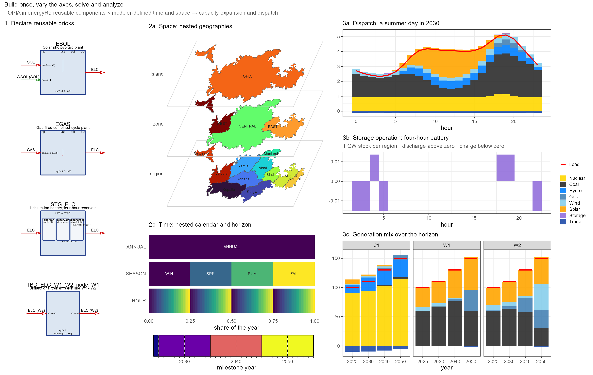

A comprehensive, modular energy system modeling framework with an R interface.
energyRt (energy system modeling R-toolbox, /ˈɛnərdʒi ɑrt/) provides a modular framework and macro-language for defining, generating, solving, and analyzing energy system optimization models through R. Instead of writing mathematical equations for each application, modelers describe a system using reusable components: commodities, technologies, supply, demand, storage, and trade. energyRt translates these descriptions into optimization models and returns results ready for analysis in R.
Build models from reusable components, from simple examples to large-scale applications. Define the system once; adapt the analysis to the question. Temporal resolution, geographical detail, solution strategy, and solver backend can change without rebuilding the conceptual model. Start with a compact teaching example, extend it into a detailed sectoral or national model, or explore alternative spatial and temporal representations of the same system.
Why energyRt?
- Model the system, not the implementation. Express energy technologies and their relationships as inspectable R objects; let energyRt generate the sets, mappings, equations, and solver-specific code.
- Build incrementally and reuse components. Assemble complex systems from smaller, understandable bricks; update components and derive model variants without duplicating entire formulations.
- Choose the right scale for each question. Combine multiple balancing timeframes and nested geographical levels, and experiment with aggregation or sampling without redefining the underlying system.
- Avoid solver lock-in. Use MathProg, JuMP, Pyomo, GAMS, or an experimental direct LP-matrix route, depending on the computational environment and problem size.
- Go beyond a single solve. Manage scenarios, inspect generated models, validate solutions, visualize results, and build reproducible analyses.
energyRt provides modeling machinery rather than a fixed model, dataset, or scenario. It is intended for analysts, researchers, educators, and model developers who need both flexibility and transparency — from introductory exercises to large-scale energy-system studies.
How it works: bricks and axes

The teaching model TOPIA, drawn by energyRt: the nested regions, the calendar and horizon, four bricks as declared, and the solved dispatch and generation mix.
-
Bricks. Commodities, supply, demand, technologies, storage, trade, weather, taxes, subsidies and custom constraints are plain R objects. energyRt generates the sets, mappings, equations, solver files and result tables;
update()derives a variant from an existing object. - Time. A nested timescales calendar — annual, seasonal, hourly, representative or sampled — with different commodities balancing at different timeframes in one model. No fixed 8,760-slice ceiling.
- Space. A geoscales hierarchy lets national, zonal and nodal balances coexist, with each process and commodity at the level where its data is.
- Solver. The same model writes MathProg, JuMP, Pyomo or GAMS, or goes straight to an LP matrix, locally or remotely.
These are independent structural axes: a model is declared once at full resolution, and a coarser or sampled calendar, a sub-territory, or a different solver is passed at solve time.
Quickstart
A model with one fuel, one power plant and one demand. GLPK is bundled in the glpsol package, so no further solver is required.
library(energyRt)
GAS <- newCommodity(
name = "GAS",
timeframe = "ANNUAL"
)
ELC <- newCommodity(
name = "ELC",
timeframe = "ANNUAL"
)
SUP_GAS <- newSupply(
name = "SUP_GAS",
commodity = "GAS",
supply = data.frame(cost = 6.0) # MEUR/PJ
)
EGAS <- newTechnology(
name = "EGAS",
input = list(comm = "GAS"),
output = list(comm = "ELC"),
ceff = data.frame(
comm = "GAS",
cinp2use = 0.55
),
invcost = list(invcost = 900), # MEUR/GW
fixom = 25,
cap2act = 31.536,
olife = 25L
)
DEM_ELC <- newDemand(
name = "DEM_ELC",
commodity = "ELC",
demand = data.frame(demand = 50) # PJ/year
)
mod <- newModel(
name = "HELLO",
data = newRepository("parts", GAS, ELC, SUP_GAS, EGAS, DEM_ELC),
region = "R1",
discount = 0.05,
horizon = newHorizon(
period = 2025:2040,
intervals = c(1, 5, 10),
mid_is_end = TRUE
)
)
scen <- solve_model(
mod,
name = "BASE",
solver = solver_options$glpk
)
getData(scen, "vObjective", merge = TRUE) # discounted system cost
getData(scen, "vTechCap", merge = TRUE) # installed capacityChanging an axis is one argument on the same objects — here the solver:
scen_highs <- solve_model(
mod,
name = "BASE_highs",
solver = solver_options$julia_highs
)solve_model() interpolates and solves in one call. To inspect or modify the interpolated scenario, use the composable stages:
scen <- mod |>
interpolate(name = "BASE") |>
solve()The Get started vignette explains the model and workflow step by step.
Modeling and analysis capabilities
- Bricks — commodities, processes, user constraints and the containers that hold them, each drawable and inspectable. Model bricks
- Nested time — user-defined calendars, mixed balancing timeframes, sampled calendars for iteration. Time resolution
- Nested space — multi-level balances, coarse processes over fine commodities, region aggregation and sub-territory solves. Space resolution
- Vintages, clusters and graded resources — one object expands into a family of processes; tiered commodities and weather so the best sites run out before the next grade starts. Vintages & clusters
- Four languages, a direct matrix, GPU and cloud — MathProg, JuMP, Pyomo or GAMS from one model; an LP/MPS matrix through multimod; NEOS and cloud execution. Solver backends
- Solve strategies — perfect foresight, myopic, sampled, region by region, or guided toward a target, each recorded as a run. Workflow
- Data and scenario management — a project registry addressing thousands of solved runs by name; Arrow-backed results larger than memory. Scenario management
-
Validation and reproducibility — structural checks that refuse a meaningless model,
verify_solution()re-deriving the model’s own identities, content hashes for every object. Workflow -
Reporting and visualisation —
draw()diagrams,autoplot(), maps, levelized costs without a solver, and HTML/PDF/Word reports for any object. Reports, autoplot()
The full inventory is in Features.
Modeling languages and solve routes
Four modelling languages, one direct-matrix route, and remote execution. The model definition does not change between them.
| Route | What it does | Good fit |
|---|---|---|
| GLPK / MathProg | Writes MathProg and solves with glpsol
|
First models, teaching, transparent local runs |
| Julia / JuMP | Writes JuMP for HiGHS, CBC, GLPK, CPLEX or cuOpt | Larger local models and a choice of algorithms |
| Python / Pyomo | Writes Pyomo for HiGHS, CBC, GLPK or CPLEX | Python-based solver environments |
| GAMS | Writes GAMS for solvers such as CPLEX or CBC | Existing institutional GAMS workflows |
| multimod | Assembles the LP matrix directly, writes MPS, solves with HiGHS or cuOpt, or renders the formulation as LaTeX | Large linear problems, documentation, inspection |
NEOS runs supported solver jobs remotely without a local licence. GPU first-order solving uses NVIDIA cuOpt through JuMP (Linux, or WSL on Windows), or cloud hardware through the experimental mmcloud route. Setup, presets and limits are in Solver backends.
Installation
pak::pkg_install(c("optimal2050/energyRt", "glpsol"))pak installs energyRt’s R dependencies, including the optimal2050 packages listed in DESCRIPTION. The glpsol package bundles the GLPK binary on every platform, and energyRt uses it first; Julia/JuMP, Python/Pyomo or GAMS are configured separately. Then check the setup:
The installation guide has the platform-specific steps.
Documentation
- Features — the full inventory of capabilities, organised by axis and workflow stage.
- Get started — the core idea and first model.
- Model bricks — the objects used to describe a system.
- Time resolution, timescales, and space resolution — user-defined nested calendars and regional hierarchies.
- Storage and Vintages & clusters — the two classes with the most structure, worked through end to end.
- Units — stating units, and the capacity-to-activity conversion.
- TOPIA I, II and III — building a complete teaching model, running scenarios on it, and aggregating its regions.
- Workflow, scenario management and reports — from a model to a reproducible study.
- reneuro — the same machinery applied to Europe + Neighbors power system at production scale.
Status
Version 0.90 is the pre-release for v1.0 and the first release since v0.50-beta; what remains before v1.0 is testing, debugging and visualisation rather than new structure. The release notes list what changed.
Bug reports and proposed improvements go to the issue tracker. The package website is https://energyrt.org.